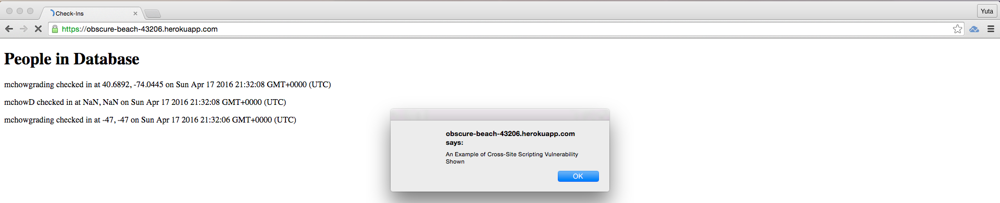
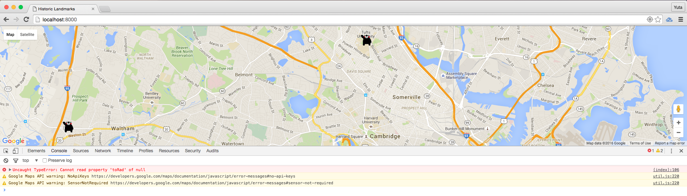
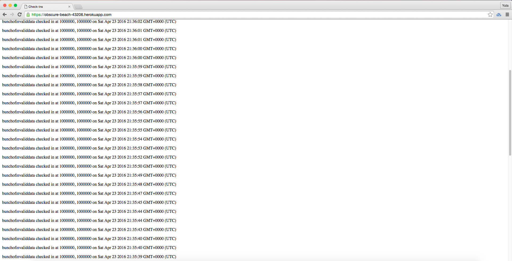

The product landmarks is a web application that takes the user's login and current location, and render the user, other users of landmarks who have checked in, and historic landmarks that are within one mile of the user's current location onto Google Map. Additionally, the users can query for the list of all the check-ins by the entire set of users up to now, and the users can also query for the check-ins made by the user with specified login. Because the product landmarks was developed by a student software engineer with limited experience with web application, the software engineer was allowed (and in fact, forced) to ignore any security concerns whatsoever. Therefore, I am hired to inspect landmarks and solve security flaws in order to improve the application to be more secure.
I inspected the applications using curl. Specifically, I used the GET and POST command line interface of curl to test for whether data validation is done on the web server application upon POST request and whether cross-site scripting is possible, among other potential security vulnerabilities. I also setted up Burp Suite and Tamper Data (on Firefox), but curl sufficed for the purpose of inspecting this specific web application.
I found multiple security flaws related to how the input data from the application users are dealt with. The application currently does not validate the data input in anyway, and because of the invalid, and potentially malicious data included, the application may: 1. crash on the users, 2. exhaust storage in database, and 3. redirect user to unwanted sites (and other effects caused by cross-site scritping). Additionally, I am concerned that the application users' privacy is at risk due to the design of the application. Specifically, any user can effectively see every other user's history of check-ins; in other words, the users can effectively "stalk" other users -- you can imagine that this is an obvious privacy issue.
Issue One "Cross-site scripting vulnerability"
Issue: Cross-site scripting is possible in the home page, allowing for the possibility of displaying of spam messages, redirecting to malicious site. etc.
Location / page: home (root) page
Severity of issue: HIGH -- for example, cross-site scripting can be used to redirect users to malicious site
Description: When the application user access the homepage, it displays the list of all check-ins in descending order in respect to check-in timestamp. The record of each check-in includes login, latitude, longitude, and timestamp. Although latitude and longitude input are floatified before insertion to the MongoDB collection (i.e. Javascript code would become NaN), the login input is not validated at all, thus Javascript can be inserted into the database collection in the "login" field of each document. When the four fields of each document are queried to be displayed, there is not validation either. The response data in the string format will be received by the browser, parsed, interpreted, and displayed -- the brower will recognize the Javascript as Javascript, and execute it. The example is shown below.
Proof of vulnerability:

Resolution: The issue can be solved by data validation when the login parameters are sent by users via POST. Some restriction on the input (i.e. regular expression) can be imposed on the login data input. This will prevent Javascript code from getting inserted into the database. Alternatively, when the login data is retreived in index.js, the symbols commonly used in Javascript functions can be escaped.
Issue Two "Application crash caused by un-sanitaized input data in /sendLocation API"
Issue: The client side application that uses /sendLocation API may crash due to the response data that are not in the data format as expected
Location / page: /sendLocation API
Severity of issue: MEDIUM
Description: The latitude and longitude inputs are floatified, then stored in MongoDB collection. The issue is that when invalid non-float latitude or longitude information is sent by users via POST (i.e. words), the data is floatified, which returns NaN, and then NaN is stored in the latitude/longitude field. When the user access the /sendLocation API, the list of all the check-in records are sent back to the user, meaning that records having NaN for their latitude/longitude field gets to sent back. When the user (brower) parse the response data, and run toRad function, for example, the attempt to execute toRad fails, causing the application (including, but not limited to, Assignment 2 -- wahtever application that assumes the response lat and lng data are in float) to crash. The example is shown below.
Proof of vulnerability:

Resolution: Input data validation can solve this issue. For example, when the latitude and longitude input via POST request are floatified and return NaN, that record (login, lat, lng, and timestamp) can be prevented from getting stored in the collection of the check-ins. A simple if statement such as the following will achieve this purpose:
if (myLat == || myLng == NaN) {
// Do not store the input
// Send error response back to the user
}
Issue Three "Database resource exhausted by spam input (possibly invalid) data"
Issue: The database instance can be populated with invalid (spam) data, which would exhaust the database space (i.e. exhausting back-end database resource with spam). Valid, actual check-in data may not get stored because database space is unavailable.
Location / page: Database server (back-end MongoDB instance); original cause in the /sendLocation API
Severity of issue: MEDIUM
Description: Similar to the two issues mentioned above, this issue also results from in-sanitized input data that get stored in the database server. Currently, when a user makes a POST request, the parameters sent are always stored in the database collection as new record, regardless of whether the parameters are valid data. This makes the database server vulnerable to hacking attempts to populate the database server with spam data, and eventually exhaust the database resource. The database space do cost money, and the more records there are the slower query execution gets, so this issue would cause the application ower to incur more costs as well as compromising the server performance. The example is shown below.
Proof of vulnerability:

Resolution: Again, if the input data are validated before stored in the database collection, this issue will be prevented. The exact implementation would depend on the regular expression imposed on the login value, but the idea is as follows:
if (login == VALIDFORM AND myLat != AND myLng != NaN) { // time is created inside the call-back so no validation needed
// collection.insert... i.e. store the input
// Query data and send appropriate response back to the user
}
In order to implement the suggestions made in the section 4. Issues Found, we will need to deploy two software engineer for 3 days, two days for implementation and another day for testing. With the flat cost of $100 for consulting report, the overall cost would be $100 / report + ($20 x 7 hours x 3 days x 2 engineers) = $940. As for the future reference, we suggest to modify two API specifications. First, for GET/checkin.json API, the API should explicitly list the number of times a given user can try querying for seemingly similar login (similar to how one gets locked out of an online banking account after several failed login attempts). This is to strengthen the application from the privacy perspective -- in the current API, anyone can query for anyone's check-in history -- I am concerned that this may be a significant privacy flaw. Second, for the same reason but more importantly, the GET/ API and POST/sendLocation API should only be allowed to display the history of check-ins by the users (logins) who explicitly have given permissions to be displayed. For example, some users of landmarks may use the application to look for historic landmarks around her current location, but may not want to be displayed in other users Google Map, or worse, may not even want her check-in to be stored in the application server database. These privacy flaws are not the result of poor implementations of the application, but rather the design/specifications of the application itself (API design not considering the pirvacy of the users sufficiently).
Thank you very much for reading my report, and please send any further inquery to Yuta Okada (yuta.okada@tufts.edu).